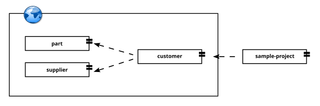

A dual resolver is one where we can combine two different repositories, one for the artifacts and other for the descriptors (arousa-ivy.xml files).
We can use it, for example, when we don’t actually manage the artifact repository (we use an external one) but we need to use It with our own set of references that we can store somewhere else.
Dual resolvers open a very interesting possibility, since other teams may not be willing to adopt practices like dependency management but it is easy to adhere to certain shared naming convention between teams when sharing resources.
With Dual resolvers, as long as the artifacts are placed using a naming convention in a shared network resource you can arrange the ivy metadata by yourself.
We are going to demonstrate this capability using the dual-resolver-data example. In this example we are going to relate three dataset files from an external resource.
We are going to take the customer, part and supplier dataset files from:

http://aiweb.cs.washington.edu/research/projects/xmltk/xmldata/
In our ivy files we describe the dependency from the customer ivy file to the part and supply ivy file:
<ivy-module version="1.1"> <info organisation="edu.washington.cs.aiweb.tpc-h" revision="1.0" module="tpc-h"/> <configurations> <conf name="default" /> </configurations> <publications> <artifact name="customer" type="data" ext="xml" conf="default" /> </publications> <dependencies defaultconf="default"> <dependency org="edu.washington.cs.aiweb.tpc-h" name="tpc-h" rev="1.0" > <artifact name="part" type="data" ext="xml" /> </dependency> <dependency org="edu.washington.cs.aiweb.tpc-h" name="tpc-h" rev="1.0" > <artifact name="supplier" type="data" ext="xml" /> </dependency> </dependencies> </ivy-module>
You can verify that we have added to our internal repository the three ivy files. Also we’ve configured the dual resolver pointing to the remote washinton.edu site.
<?xml version="1.0" encoding="UTF-8"?> <ivysettings> <property name="dual-example-repository-path" value="${user.home}/dev/ws/arousaws/arousa-examples/examples/ dual-resolver-data/repository" override="true" /> <settings defaultResolver="dual-example"/> <resolvers> <dual name="dual-example"> <filesystem name="ivys"> <ivy pattern="${dual-example-repository-path}/ [module]-ivy-[revision].xml"/> </filesystem> <url name="two-patterns-example"> <artifact pattern="http://aiweb.cs.washington.edu/ research/projects/xmltk/xmldata/data/[module]/[artifact].[ext]"/> </url> </dual> </resolvers> </ivysettings>
The first part of the dual resolver points at the ivy descriptors location while the second one points to the artifacts. We call the update dependencies with the following command.
$ arousa update-dependencies
The call does not only resolve the customer dataset described in the project dependencies, but, as in our repository the three files are described as related, Ivy bring us the three necessary files.
<ivy-module version="1.1"> <info organisation="org.markupuk.arousa.examples.data-download" module="data-download-test"/> <configurations> <conf name="default" /> </configurations> <publications> </publications> <dependencies defaultconf="default"> <dependency org="edu.washington.cs.aiweb.tpc-h" name="tpc-h" rev="1.0" > <artifact name="customer" type="data" ext="xml" /> </dependency> </dependencies> </ivy-module>